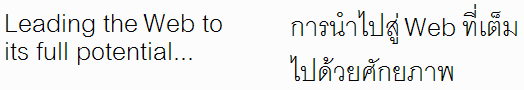

Quando un testo viene tradotto da una lingua all'altra è probabile che la lunghezza del testo di partenza e quella del testo di arrivo siano diverse. In alcuni casi, le differenze di lunghezza sono sistematiche.
Questo articolo fornisce le basi per esplorare brevemente alcune di queste differenze sistematiche. Altri articoli tratteranno implicazioni specifiche per la progettazione di pagine Web e le soluzioni proposte.
In generale, più la progettazione del layout è flessibile, meglio è. Quando possibile, è bene consentire il riposizionamento del testo, evitando caselle di testo troppo strette o elementi a larghezza fissa. Si deve prestare particolare attenzione a inserire in modo adeguato il testo all’interno dei design grafici. Design e contenuto devono essere separati, in modo che le dimensioni dei caratteri, le altezze delle linee, ecc. possano essere facilmente adattate al testo tradotto. Si devono tenere a mente queste indicazioni anche quando si progettano le larghezze dei campi di un database in termini di lunghezza dei caratteri.
I testi inglesi o cinesi sono di solito molto compatti, mentre le loro traduzioni generano solitamente testi più lunghi. A volte l’espansione diventa un vero problema.
Per esempio, l'interfaccia utente di Flickr è stata recentemente tradotta in diverse lingue. Uno dei messaggi più comuni quando si guardano le proprie foto indica quante volte è stata visualizzata la pagina della foto, ad esempio "392 views". La tabella seguente mostra il rapporto tra la lunghezza della parola originale inglese “views” e la lunghezza delle sue traduzioni utilizzate su Flickr.
| Lingua | Traduzione | Rapporto |
|---|---|---|
| Coreano | 조회 | 0.8 |
| Inglese | views | 1 |
| Cinese | 次檢視 | 1.2 |
| Portoghese | visualizações | 2.6 |
| Francese | consultations | 2.6 |
| Tedesco | -mal angesehen | 2.8 |
| Italiano | visualizzazioni | 3 |
L'espansione del 300% dall'inglese all’italiano per una stringa di caratteri corta come questa non è affatto una sorpresa. Di seguito, sono elencate le percentuali di espansione di un testo tradotto dall'inglese in una delle lingue europee, come pubblicato da IBM nelle sue Guidelines to design global solutions.
| Numero di caratteri di partenza in inglese |
Espansione media |
|---|---|
| Fino a 10 | 200–300% |
| 11–20 | 180–200% |
| 21–30 | 160–180% |
| 31–50 | 140–160% |
| 51–70 | 151-170% |
| Over 70 | 130% |
In generale, è normale che un testo si espanda, ma è comunque interessante notare che più è piccolo il messaggio di partenza, più sarà lunga la sua traduzione.
Ovviamente, ciò non accade per ogni stringa di caratteri, ma quando succede si deve avere una strategia per affrontarlo. Ad esempio, Flickr traduce "FAQ" come "FAQ" in tedesco e francese, ma come "Perguntas freqüentes" in portoghese, e "Preguntas frecuentes" in spagnolo.
In genere, il problema è che quanto più il testo è breve, tanto più è probabile che venga inserito in spazi molto ristretti, ad esempio accanto a campo di immissione di un modulo, o all'interno di un grafico, o in una serie di tabulazioni a larghezza limitata, ecc.
Inoltre, si deve tenere a mente che l'espansione del testo non è un problema esclusivo delle interfacce utente con il testo originale in inglese e cinese. Se il testo originale è in spagnolo, il termine "Idioma de la interfaz" sarà più corto in inglese ("Interface language"), ma sarà molto più a lungo in malese ("Bahasar pegantar untuk penelusuran"). Inoltre, lasciando troppo spazio bianco sulla pagina, le traduzioni più corte possono essere problematiche tanto quanto quelle più lunghe.
Nel caso di traduzione di paragrafi è possibile che l’espansione del testo sia inferiore. Tuttavia, ci sono alcuni aspetti che andrebbero considerati. Per esempio, si riuscirebbe a sistemare tutto il paragrafo "above the fold"? Gli oggetti inseriti saranno ancora allineati nel modo desiderato se hanno diversi tassi di espansione al ribasso?
Oltre all'imprevedibilità del numero di caratteri risultanti dalla traduzione, ci sono altri fattori che complicano la gestione del layout del testo.
Alcune lingue come il finlandese, il tedesco e l'olandese, creano grandi parole composte per sostituire quella che, in altre lingue, è una sequenza di parole più piccole.
Per esempio, l'inglese "Input processing features” diventa "Eingabeverarbeitungsfunktionen" in tedesco. Mentre il testo in inglese può essere facilmente formattato in due righe nel caso in cui sia disponibile una larghezza limitata, ad esempio accanto a un campo di immissione di un modulo, o in una serie di tabulazioni o pulsanti, o in colonne strette, il tedesco potrebbe non andare a capo automaticamente, rappresentando una sfida per il layout.
Tra le altre lingue, cinese, giapponese e coreano, generano testi con caratteri più complicati dei testi con caratteri latini. Ciò può significare che sebbene il numero di caratteri in traduzione rimanga lo stesso, o diventi leggermente inferiore, lo spazio orizzontale necessario può essere molto più grande.
Per esempio, l'inglese "desktop" diventa "デスクトップ" in giapponese. Il giapponese ha un carattere in meno ma occupa molto più spazio orizzontale.
È molto comune che i caratteri non-latini siano molto più alti dei caratteri latini. In più, questi caratteri richiedono di solito uno spazio verticale maggiore rispetto a quelli latini.
Per esempio, il grafico seguente mostra lo stesso testo in inglese e tailandese. Si noti come ci siano due linee in entrambi i casi, ma lo spazio verticale richiesto dal testo tailandese è maggiore. Ciò è dovuto, in parte, dalla complessità dei suoi caratteri (utilizzando glifi più alti, l’altezza della riga aumenta) ma è anche dovuto all’abitudine in tailandese ad utilizzare un'interlinea più ampia rispetto allo standard dei testi latini. Ci sono numerosi alfabeti che richiedono più altezza dei caratteri latini, come l'arabo (specialmente nei font Nastaliq), il cinese, il Devanagari (usato per l'hindi), il giapponese, il coreano, il tibetano, ecc.

Se si sfruttano le abbreviazioni per adattare il testo a uno spazio ristretto, si deve considerare se sia davvero una buona idea. Altre lingue potrebbero non essere in grado di replicare tale abbreviazione e il testo potrebbe richiedere un’espansione nella traduzione.
In molte lingue, abbreviare non è comune. Questo può dipendere dallo stile della specifica lingua. In altri casi, può essere dovuto a fattori più pratici. Ad esempio, le parole arabe tendono a derivare da radici molto compatte e basate su schemi ricorrenti che utilizzano prefissi, suffissi e piccoli cambiamenti interni per esprimere un significato preciso. Può essere difficile abbreviarle senza perdere il significato.
(Inoltre, si dovrebbe fornire ai traduttori un elenco delle espansioni corrispondenti alle abbreviazioni che si utilizzano.)